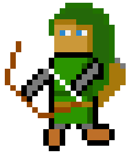
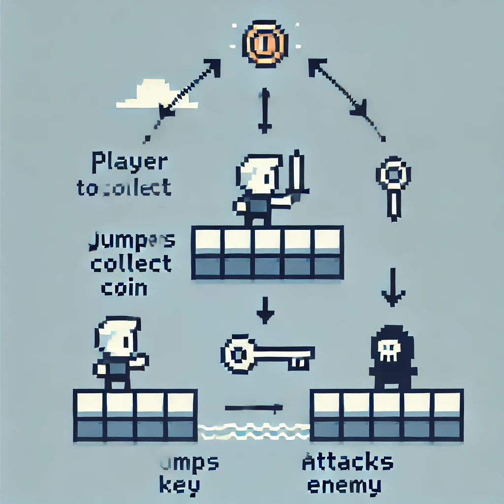
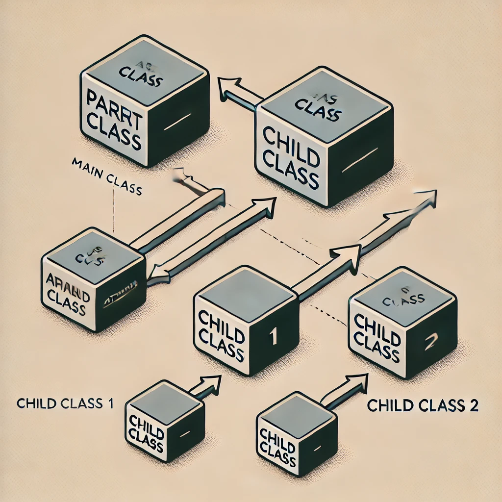
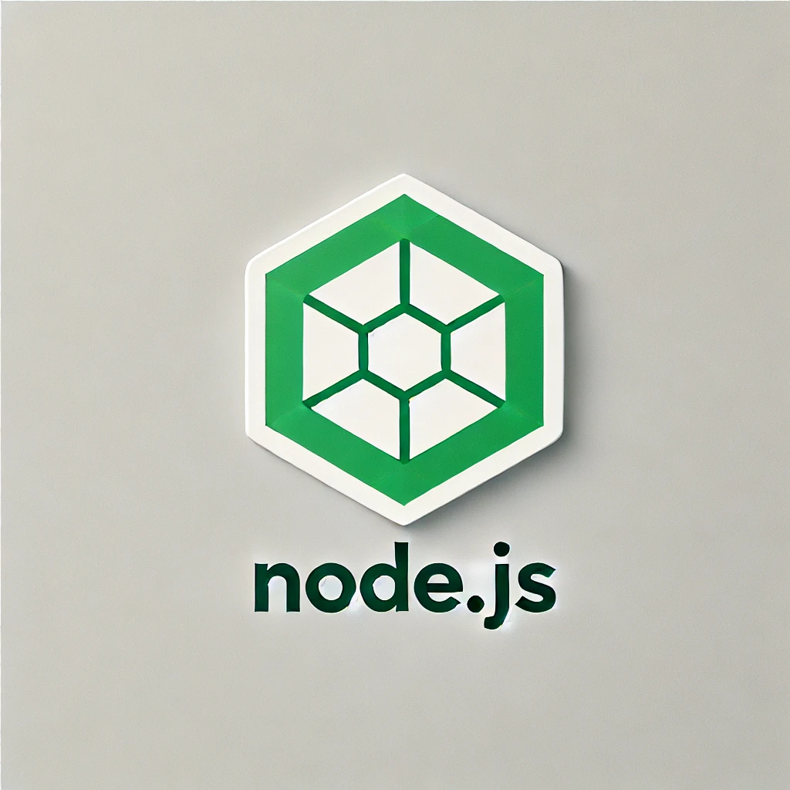
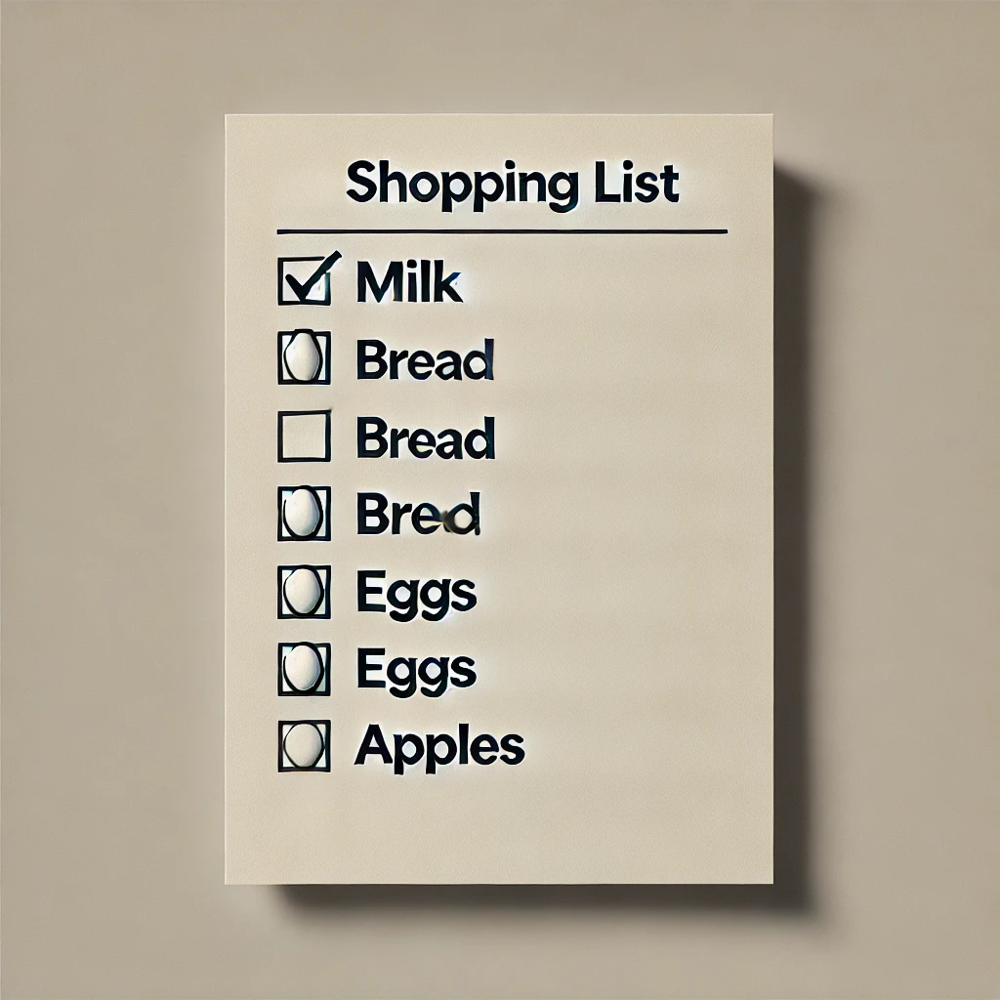
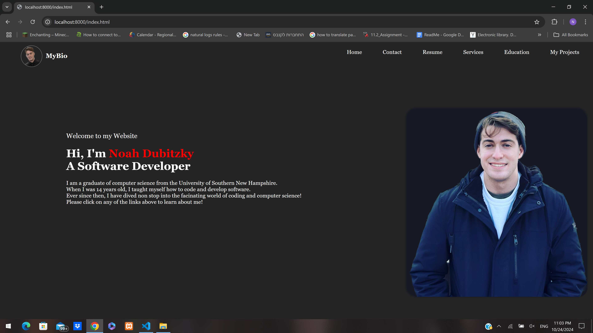

a fast-paced 2D platformer hack-and-slash game using JavaScript and the Phaser framework.
The game features vibrant pixel-art environments where players navigate challenging levels filled with enemies and obstacles.
The core mechanics revolve around fluid combat, allowing players to perform combo attacks, dodge, and execute
special moves to defeat enemies. The project uses complex classes and functions to develope characters and define game mechanics.



Market mapping
is a website designed to help shoppers navigate through a store efficiently and find all of the items that
they are looking for. For the front end of this project, I used html, css, and jquery to create an interactive and visually
pleasing layout. The project uses a rest api built with node.js to communicate with the mysql server.



Resume Website
this is the very website that you are interacting with right now! This site uses javascript, html, and class
to create a fully dynamic front end for user interface.